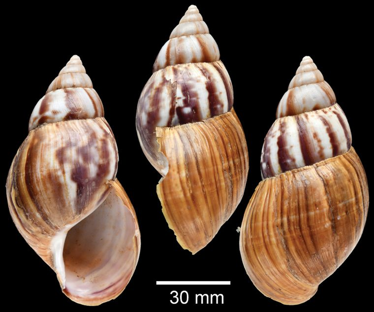

अफ्रीकी घोंघाGiant African Snail
Lissachatina fulica · Achatinidae · MOL-0009

- Scientific name
- Lissachatina fulica (Bowdich, 1822)
- Family
- Achatinidae
- Hindi
- अफ्रीकी घोंघा
- Local names
- afriki ghongha, african ghongha, bada ghongha, african snail
- Status here
- invasive
- IUCN
- LC
- Review
- audited and independently read
When to look कब देखें
Present all year.
Uses and possibilities उपयोग और संभावनाएँ
Drawn from the documented uses in the profile below, where each is labelled traditional, current or a research lead. All uses →
अफ्रीकी घोंघा / Giant African Snail
Lissachatina fulica (Bowdich, 1822) — Achatinidae
अफ्रीकी घोंघा — अफ्रीका की बहुत बड़ी, भूरी, भारी मछली जो पिछले पच्चीस साल में भारत पहुँची और अब सब्ज़ियों, बाग़ों और खेतों में बर्बादी मचा रही है। एक रात में बाग़ की सब सब्ज़ियाँ कतरे हुए। खोल सफ़ेद-भूरी, शंक्वाकार, 8 से 10 सेंटीमीटर लंबी। यह चूहे के एक परजीवी का घर है, जो कभी-कभी आदमियों को भी संक्रमित करता है। सोने की फसल मार सकता है।
Quick Identification त्वरित पहचान
| Feature | Description |
|---|---|
| Size | Shell 80–100 mm tall, occasionally to 150 mm; among the largest land snails |
| Shape | Conical, with 7–9 rounded whorls; the spire long and pointed |
| Colour | Shell tan to light brown, sometimes with darker spiral bands; often weathered and corroded |
| Opening | Oval, with a thin, horny lid (operculum) |
| Animal | Dark brown to blackish; a muscular foot; a long eyestalk |
| Texture | Shell solid; fine growth lines visible |
| Behaviour | Nocturnal; leaves slime trail; active in monsoon and cool season |
Field tip: A very large, conical snail with a tan to brown shell, the size of a thumb or larger, leaving a thick slime trail. No other land snail in the region approaches this size. Feeds openly on vegetation at night, causing obvious damage. The large size and pale conical shell are distinctive.
हिंदी — कैसे पहचानें: बहुत बड़ा घोंघा, अँगूठे से बड़ा, खाकी-भूरा, शंक्वाकार। गीली चिपचिपी लीद, खेत-बाग़ में। रात को निकलकर सब कुछ खा जाता है।
Morphology आकारिकी
Biometrics:
| Measurement | Range |
|---|---|
| Shell height | 80–100 mm |
| Shell diameter | 40–50 mm |
| Whorls | 7–9 |
| Aperture height | 25–35 mm |
| Weight of adult | 20–40 g |
| Eggs per clutch | 100–400 |
| Clutches per year | 5–6 |
Shell: The shell is thick, solid, conical and smooth. The whorls are regularly rounded and separated by a moderately deep groove. The aperture (opening) is oval and sealed by a thin, leathery operculum. The entire shell has a brownish periostracum (outer layer).
Animal and reproduction: The body is large, dark brown to black. The eye is located at the tip of a long eyestalk, about as long as the tentacles. The foot is large and muscular, secreting a profuse mucus that leaves a thick slime trail. Hermaphroditic; cross-fertilisation occurs. Eggs are laid in clustered masses in soil crevices and under objects, with no parental care.
Feeding apparatus: A large radula (ribbon-like feeding structure with rows of teeth) for scraping and grazing; capable of consuming tough plant material.
हिंदी: खोल मोटी, ठोस, शंक्वाकार, चिकनी। सात से नौ गोल चक्कर। शरीर काला-भूरा, बड़ा पैर, लंबी आँख की डंडी जितनी लंबी दूसरी।
Behaviour & Ecology व्यवहार और पारिस्थितिकता
A nocturnal herbivore and generalist feeder. It hides in soil, leaf litter and under objects by day and emerges at dusk and through the night to feed on a wide range of plants: vegetables, fruit trees, ornamental plants, and crop seedlings. The damage is obvious—entire plants stripped of leaves, gnawed fruits. It can survive on dried plant material when fresh vegetation is scarce. It tolerates a wide range of moisture and temperature but is most active in the monsoon and cool months. In extreme heat and drought, it retracts into the shell and becomes dormant, surviving for months without feeding.
It is a host for the rat lungworm (Angiostrongylus costaricensis), a parasite that occasionally infects people who eat raw snails or undercooked food contaminated with the snail. The infection causes eosinophilic meningitis, a severe neurological disease. The risk in India is low but documented.
हिंदी: रात को निकलकर सब कुछ खाती है: सब्ज़ियाँ, फल, फूल, गेहूँ — जो मिले। दिन में मिट्टी में या पत्तियों के नीचे छिपी। गरमी में सूख जाती है महीनों तक। चूहे का एक परजीवी इसमें रहता है जो कभी-कभी आदमी को संक्रमित कर सकता है।
Life Cycle / Phenology जीवन चक्र
| Stage / season | Event |
|---|---|
| March–May | Emergence from dormancy; feeding and growth in warming weather |
| May–October | Breeding throughout warm and cool periods; multiple clutches |
| Eggs, 2–3 weeks | Laid in clusters under soil, leaf litter and debris; no parental care |
| Hatchlings, 2–4 weeks | Small, feeding on decaying matter; rapid growth |
| 6–9 months | Sexual maturity; size 30–50 mm |
| June–October | Peak activity and damage in monsoon and cool months |
| November–February | Feeding continues in cool months; slower growth |
| March–June | Heat dormancy; retraction into shell; no feeding |
| Lifespan | 5–7 years |
हिंदी: मार्च में जागना; मई से सितंबर तक प्रजनन; अंडे मिट्टी में; दो-तीन हफ़्ते में निकलते हैं; छह से नौ महीने में बालिग़; गरमी में सोना; पाँच-सात साल की उम्र।
Host Plants or Prey आहार
- Vegetables and crops: Tomato, lettuce, carrot, cabbage, leafy greens, seedlings.
- Fruit trees: young leaves and fruit of Mango, citrus, Guava.
- Ornamental plants: roses, hibiscus, and other garden plants.
- Fallen leaves and decaying vegetation when fresh food is scarce.
- Stored crops: grain and dried plant material in storage.
Predators / Natural Enemies शत्रु
- Predatory snails: Euglandina and other carnivorous land snails.
- Reptiles: Bengal Monitor, Checkered Keelback, and other snakes on juveniles.
- Birds: Black Kite, crows (on small individuals).
- Mammals: Small Indian Mongoose, rats and shrews on small snails and eggs.
- Humans: collected and crushed; removal by hand (with protective gloves).
Agricultural / Human Relevance कृषि प्रासंगिकता
Crop damage. A major pest of agriculture and horticulture in invaded regions. A single night's feeding can strip seedlings and young plants. In orchards, it gnaws fruit and leaves. In vegetable gardens, it can destroy entire beds. Damage is economically significant in horticultural production.
Health hazard. The intermediate host of rat lungworm (Angiostrongylus costaricensis, formerly A. cantonensis). The parasite causes eosinophilic meningitis if the snail is consumed raw or undercooked. The risk in India is currently low; thorough cooking eliminates the risk. No human infections are documented in Uttar Pradesh to date.
Control. Difficult once established. Handpicking (with gloves) and crushing is laborious but effective for small infestations. Habitat management—removing mulch and leaf litter where snails hide—reduces populations. Repeated removal and exclusion from crops is the only option; no pesticide is effective and safe.
Traditional and Ethnobotanical Use: none; an arrival of the 21st century.
Today. A serious agricultural pest in some horticultural areas. Occurrence is patchy and dependent on local climatic conditions and management.
Research direction (a lead, not a result). The range expansion of L. fulica in Uttar Pradesh and neighbouring states is poorly mapped. A record of occurrence by district, elevation and habitat would allow prediction of spread. The efficacy of simple control methods (handpicking, habitat manipulation, exclusion) in village gardens is undocumented and would be a genuine contribution.
हिंदी: बागवानी और सब्ज़ी का कीड़ा। रात भर सब कुछ खा सकता है। एक रात में पूरा बाग़ तबाह। चूहे के परजीवी का घर; कभी-कभी आदमियों को संक्रमित कर सकता है। कच्चे घोंघे खाने से खतरा। नियंत्रण: हाथ से तोड़ना, पत्तियों के ढेर हटाना। दवा बेकार।
Expected Locally स्थानीय रूप से अपेक्षित
Not a field record. Written from published accounts for eastern Uttar Pradesh. No confirmed local sighting yet — if you have seen it, that is what the atlas needs.
अभी तक स्थानीय पुष्टि नहीं। यह विवरण प्रकाशित स्रोतों से है, किसी अवलोकन से नहीं।
To be expected in horticultural areas and near gardens in the district, if present. Occurrence is patchy and dependent on local trade in plants and propagules. A photograph or a specimen is a confirmed record and should be reported to the agricultural authorities.
Distribution वितरण
Global range: Native to East Africa; introduced to Asia, Pacific Islands and the Americas; now established in many regions.
In India: First recorded in Kerala and Tamil Nadu in recent decades; spreading northward; present in Maharashtra, Madhya Pradesh and other central Indian states; status in Uttar Pradesh uncertain.
In Uttar Pradesh: Occurrence unconfirmed; likely present in horticultural areas in some districts.
In Basti district / eastern UP: Status unknown; to be confirmed by field survey.
Research Questions शोध प्रश्न
Anyone can investigate these | कोई भी इन प्रश्नों की जाँच कर सकता है
- Is the giant African snail present in your village, and in which habitats? / क्या आपके गाँव में अफ्रीकी घोंघा है, और कहाँ? — Ask gardeners and agricultural extension workers.
- If present, which plants does it feed on, and what is the damage? — Document feeding damage.
- How many individuals can be collected by hand in an evening in an infested garden? — Handpick for two hours after dusk.
- Can the snail be excluded from a vegetable plot with a simple barrier or mulch removal? — Test in a small area.
- Does the snail harbour the rat lungworm parasite in your region? — Dissect specimens and look for the parasite (requires expertise).
Similar Species मिलती-जुलती प्रजातियाँ
| Species | How to tell apart | हिंदी |
|---|---|---|
| Banded Pond Snail (Bellamya bengalensis) | Much smaller (25–40 mm); aquatic; thinner shell; spiral bands | बहुत छोटी, पानी की |
| Apple snail (Pomacea canaliculata) | Slightly smaller, rounder, greenish shell; aquatic; in paddies | गोल, हरा, धान का |
| Large predatory snail (Euglandina rosea) | Smaller (40–60 mm); more slender; pinkish shell; carnivorous | पतली, गुलाबी, मांसाहारी |
Field rule: A very large (8–10 cm), tan-brown, conical snail with a thick slime trail, feeding openly on vegetation at night, is the giant African snail; no native snail approaches this size.
Taxonomy & Classification वर्गीकरण
Original description. Described by Bowdich in 1822 in An Elementiary Introduction to Conchology. Placed in various genera; the current genus Lissachatina (meaning "smooth Achatina") was defined by Iredale in 1937.
Subspecies. Several subspecies have been described; the invasive populations are usually assigned to L. f. fulica.
Family and order placement. Achatinidae, the giant land snails of Africa; order Stylommatophora. The family is African in origin and contains some of the world's largest land snails.
Phylogenetic notes. Lissachatina is a genus of African land snails; molecular work confirms the family Achatinidae as monophyletic.
IUCN status rationale. Least Concern. Extremely abundant in invaded regions; expanding in range.
Photo Gallery फोटो गैलरी
Photos needed आवश्यक फोटो
- [ ] Whole snail on vegetation (पौधे पर पूरा घोंघा)
- [ ] Close-up of shell showing whorls (खोल की विस्तार से)
- [ ] Feeding damage on leaves (पत्तियों पर खाने का निशान)
References संदर्भ
- Bowdich, T.E. (1822). An Elementiary Introduction to Conchology. J. Smith, Paris. [original description]
- Iredale, T. (1937). A revision of the land molluscan fauna of Lord Howe Island. Australian Zoologist 8: 213–247.
- Cowie, R.H. (2001). Decline and homogenization of Pacific faunas: the land snails of American Samoa. Biological Conservation 99: 207–222.
- Alonso-Zarazaga, M.A. & Salgado-Salazar, C. (2013). Lissachatina fulica (Bowdich, 1822) – Checklist of CITES species. CITES Nomenclature Checklist.
- Mukherjee, A.B. & Pandey, R.L. (2014). The giant African snail: a potential threat to Indian agriculture. Current Science 106: 1202–1204.
- GBIF Occurrence Data — Lissachatina fulica, India (2026).
Source file: species/fauna/mollusks/giant_african_snail.md